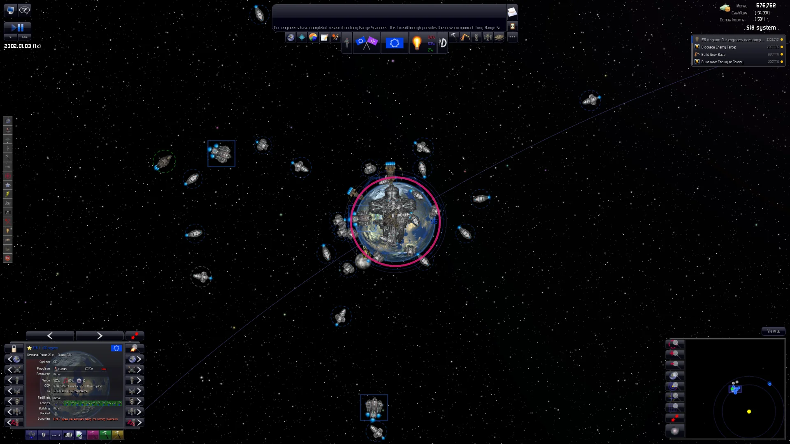
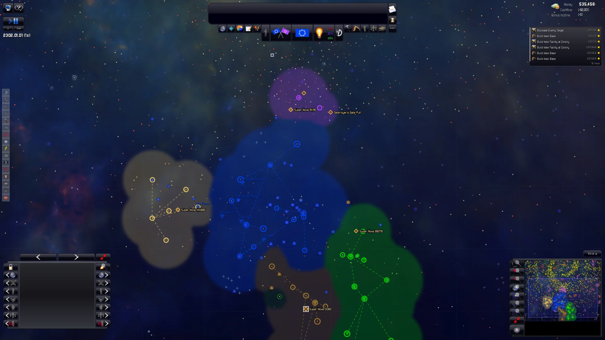

Distant Worlds: Universe won't start? Play it with openDWU.
openDWU is a free, open-source recreation of Distant Worlds: Universe 1.9.5, with native apps for Windows 10/11, macOS (Apple silicon) and Linux. It plays the same game, using the data files from your own copy.
Download the latest release Install guide

Common problems with the original game
The original is a 2014 Windows program built on the .NET Framework and Microsoft's XNA Framework 4.0, a DirectX 9 game library that is no longer maintained. Players often report:
- Distant Worlds: Universe not launching, or closing straight away, on Windows 10 or Windows 11;
- errors about a missing or broken XNA Framework or .NET Framework;
- a black screen or graphics errors on start-up;
- "out of memory" crashes in big galaxies or late games;
- no Mac version (Steam on macOS says it is incompatible and won't download it), and no native Linux version.
How openDWU helps
- No XNA, .NET Framework or DirectX 9 needed. It is a new engine, not a patch for the old program.
- Native 64-bit apps for Windows, macOS (Apple silicon) and Linux.
- The same game. New code, written to match the original's rules, formulas and generation order (no original code is copied; the decompiled game was used only as a reference for accuracy), so games play like Universe 1.9.5 (which includes the earlier expansions).
- Uses your own install. It finds your Steam folder by itself. On a Mac, copy the game folder from a PC where you own it.
- Opt-in expansions. Five switches add The Rim, Politics & Characters, Economy, Galactic Threats and Living Galaxy. With them off, it is the stock game.
- Modded themes work. Themes in your install's
Customizationfolder can be switched on from the main menu. - Free and open source (MIT licence). Non-commercial: nothing is sold and no donations are taken.
You need your own copy of Distant Worlds: Universe. openDWU ships none of the original game's
art, sounds or data; it reads them from your install at runtime.

Get started
- Download the file for your system.
- Follow the install steps (the apps are unsigned, so there is a one-time "open anyway" step).
- Point it at your Distant Worlds: Universe folder if it doesn't find it by itself.
Problems? See Troubleshooting or ask in Discussions.